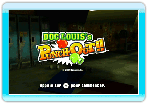

5 |
Bienvenue! |
 |

● C’est Little Mac vs. Doc Louis! ● Écran du menu principal Note : Toutes les données seront perdues une fois que vous retournez au Menu Wii. Si vous aviez déverrouillé la séance de pratique, elle ne sera plus disponible la prochaine fois que vous jouerez. Vous devrez compléter les deux premières leçons pour la déverrouiller de nouveau. |
 pour commencer. La séance de pratique ne sera disponible qu’après avoir réussi l’échauffement et l’entraînement.
pour commencer. La séance de pratique ne sera disponible qu’après avoir réussi l’échauffement et l’entraînement. |
 |
 |